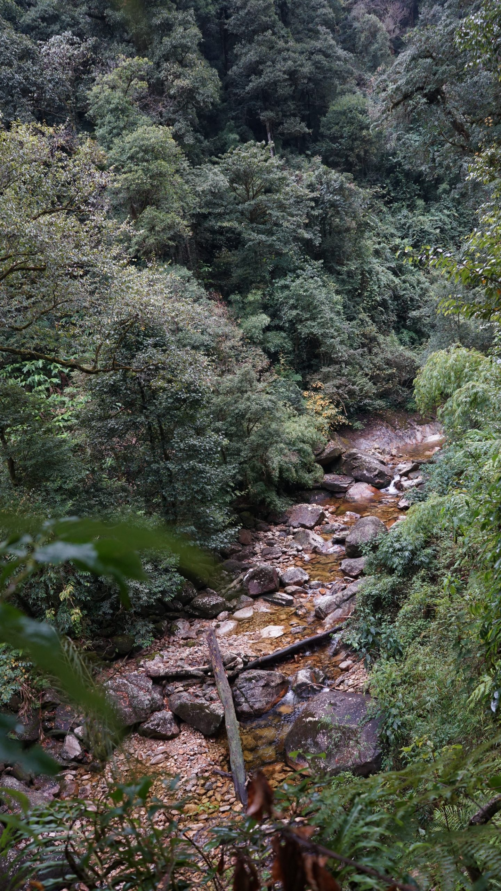
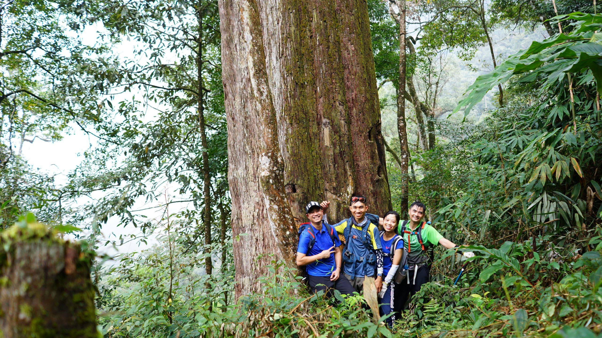
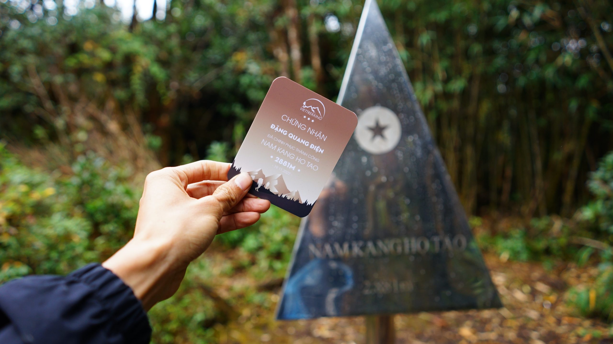

Nam Kang Ho Tao (2.881m) là đỉnh núi nằm ở huyện Mường Tè, tỉnh Lai Châu – một trong những vùng đất hoang sơ và ít người khám phá nhất Việt Nam. Đỉnh núi nổi tiếng với những điểm săn mây tuyệt đẹp và thảm rừng nguyên sinh hùng vĩ.
Hành trình leo Nam Kang Ho Tao đưa bạn qua những cánh rừng già bí ẩn, suối trong vắt và những bản làng dân tộc thiểu số còn nguyên vẹn nét văn hoá truyền thống. Đây là cung đường lý tưởng cho những ai muốn trải nghiệm thiên nhiên hoang dã đích thực của vùng Tây Bắc.
Tour ghép khởi hành cuối tuần. Liên hệ Hidden Path để nhận lịch cụ thể từng tuần.
Đặc điểm nổi bật
Bao gồm & Không bao gồm
✓ Bao gồm
- Xe đưa đón Hà Nội – Lai Châu – Hà Nội
- Hướng dẫn viên chuyên nghiệp
- Porter địa phương hỗ trợ 1:1
- Toàn bộ bữa ăn trong hành trình
- Lều ngủ, túi ngủ, thảm nằm
- Gậy leo núi, nước uống
- Huy chương chinh phục đỉnh
✗ Không bao gồm
- Chi phí cá nhân phát sinh
- Đồ ăn vặt, nước uống riêng
- Trang phục và giày leo núi
- Bảo hiểm du lịch
- Chi phí phát sinh do thời tiết
Lịch trình tour chinh phục Nam Kang Ho Tao
19h00: Tập trung tại bến xe Mỹ Đình (hoặc điểm hẹn do Hidden Path thông báo). Xe giường nằm cao cấp bắt đầu khởi hành đi Lai Châu. Trưởng đoàn phổ biến lại một số lưu ý quan trọng. Quý khách nghỉ ngơi dưỡng sức trên xe.
Bữa ăn: Không. (Quý khách vui lòng ăn tối trước khi lên xe).
Nghỉ đêm: Ngủ đêm trên xe giường nằm.
06h30: Tới thành phố Lai Châu. Xe trung chuyển đưa đoàn đi nhận phòng tạm, vệ sinh cá nhân và tận hưởng cái lạnh sớm mai của vùng cao. Sau đó, đoàn dùng bữa sáng với các món đặc sản địa phương để nạp năng lượng.
09h00: Xe đưa đoàn di chuyển tới điểm xuất phát (bản làng dân tộc địa phương). Tại đây, mọi người sẽ làm quen với đội ngũ Porter người bản địa, phân chia đồ đạc và bắt đầu hành trình trekking.
12h00: Đoàn dừng chân bên dòng suối trong vắt hoặc khu vực bóng rợp của rừng nguyên sinh để dùng bữa trưa picnic. Bữa trưa được các Porter chuẩn bị nhanh chóng và chu đáo.
13h30: Tiếp tục chặng đường buổi chiều. Địa hình bắt đầu nâng độ khó với những con dốc gắt len lỏi qua thảm rừng già hoang sơ, nhiều rêu phong và cây cổ thụ bạt ngàn.
16h30: Đến điểm cắm trại đêm đầu tiên ở độ cao lý tưởng. Mọi người cởi bỏ balo, thay đồ khô ráo, tự do ngắm nhìn khung cảnh hoàng hôn lãng mạn lọt thỏm giữa núi rừng hùng vĩ.
18h30: Thưởng thức bữa tối nóng hổi với các món nướng đặc trưng do các anh Porter chế biến. Cả đoàn quây quần bên bếp lửa, nhâm nhi ly trà ấm và chia sẻ câu chuyện. Nghỉ ngơi sớm chuẩn bị cho ngày mai.
Bữa ăn: Sáng, Trưa, Tối.
Nghỉ đêm: Ngủ lều (đã trang bị sẵn túi ngủ và thảm cách nhiệt).
05h00: Thức dậy sớm, đón bình minh giữa rừng già. Đoàn ăn sáng nhẹ (mì tôm, trứng, hoặc bánh chưng nướng) và uống cà phê nóng. Chuẩn bị balo nhỏ mang theo nước uống và đồ giữ ấm để bắt đầu chặng leo khó nhất.
06h00: Hành trình leo chóp bắt đầu. Quý khách sẽ băng qua những khu rừng trúc ken đặc, những vách đá dựng đứng rêu phong trơn trượt đòi hỏi sự khéo léo và thể lực bền bỉ.
09h30: Chạm đỉnh Nam Kang Ho Tao (2.881m)! Cảm xúc vỡ oà khi chinh phục thành công một trong những cung đường hoang sơ và khắc nghiệt bậc nhất Tây Bắc. Quý khách nhận huy chương vinh danh, chụp ảnh check-in và đắm chìm trong biển mây bồng bềnh (nếu thời tiết ủng hộ).
11h00: Dùng bữa trưa nhẹ trên đỉnh hoặc điểm nghỉ gần chóp. Sau đó, đoàn bắt đầu hành trình hạ độ cao, xuống núi theo hướng khác hoặc hướng đường cũ tuỳ thuộc vào điều kiện thời tiết thực tế.
15h00: Về tới điểm cắm trại. Thời gian tự do để quý khách nghỉ ngơi, giãn cơ hoặc trò chuyện cùng những người bạn đồng hành.
18h30: Bữa tiệc tối ăn mừng thành quả của cả đoàn. Đêm cuối giao lưu rộn rã giữa núi rừng trước khi về lại thành phố.
Bữa ăn: Sáng, Trưa, Tối.
Nghỉ đêm: Ngủ lều trại.
06h00: Quý khách thức dậy ăn sáng, thưởng thức không khí trong lành lần cuối. Mọi người cùng nhau thu dọn đồ đạc, dọn dẹp vệ sinh sạch sẽ khu vực cắm trại và bắt đầu trekking xuống núi.
07h30: Hành trình xuống núi khá nhanh do phần lớn là đi dốc xuống, nhưng cần chú ý bước chân để tránh trơn trượt ở những đoạn rêu ẩm.
11h30: Về tới điểm xuất phát ban đầu. Quý khách lên xe trung chuyển quay lại trung tâm thành phố Lai Châu.
13h00: Đoàn dùng bữa trưa thịnh soạn tại nhà hàng địa phương ở Lai Châu. (Quý khách có thể tự túc trải nghiệm tắm lá thuốc cổ truyền để xua tan mệt mỏi của 3 ngày leo núi).
14h00: Lên xe giường nằm khởi hành về lại Hà Nội. Mọi người có một giấc ngủ dài trên xe.
22h00: Xe về đến Hà Nội. Trưởng đoàn gửi lời chào tạm biệt, kết thúc chuyến hành trình Nam Kang Ho Tao thành công rực rỡ và đầy kỷ niệm.
Bữa ăn: Sáng, Trưa.
Độ khó
Tour leo núi Nam Kang Ho Tao được đánh giá ở mức Thách thức – phù hợp với người có thể lực tốt, đã qua ít nhất 1 lần leo núi 2N1Đ. Địa hình cung này nổi tiếng với rừng già ẩm ướt, dốc cao liên tục và vị trí xa dân cư, đòi hỏi sự kiên trì lớn.
Chuẩn bị trước tour
Thư viện ảnh


